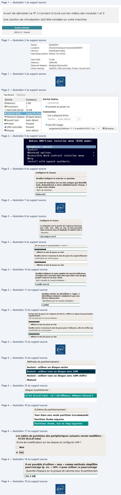
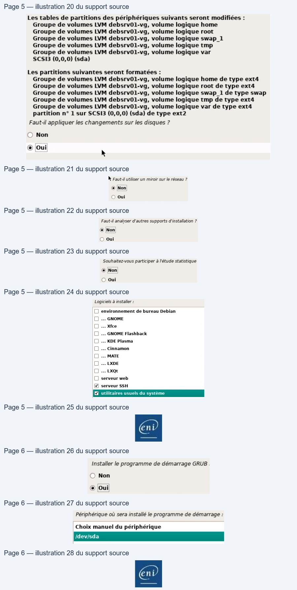

Transcription du document du Drive TSSR. La mise en forme est adaptée au Web ; les compléments IA du portail sont présentés séparément.
Administration Debian GNU/Linux
TP du Module 02 – Installation d’une distribution Linux
Avant de démarrer ce TP, il convient d’avoir suivi les vidéos des modules 1 et 2
Une solution de virtualisation doit être installée sur votre machine
Durée estimée
45mn à 1 heure
I.
Récupérer l’image source d’installation
Copier localement le fichier debian-11.x.x-amd64-dvd.iso depuis le serveur de l’ENI.
(avec 11.x.x = la version disponible sur le serveur)
II.
Création de la machine virtuelle
Créer une nouvelle machine virtuelle avec les paramètres suivant :
- Interface réseau permettant l'accès au réseau de la salle (Bridged)
- Disque dur de 10 Go de taille dynamique
- 2048 Mo de mémoire vive
Les paramètres de la VM
- Démarrer la machine virtuelle en mappant le fichier ISO comme CDROM.
Page 1/6
© ENI – Tous droits réservés
Name:
DebSRVO1
Location:
/home/mclaveau/vmware/DebSRV01
Version:
Workstation Beta
Operating System: Debian 10.x 64-bit
Hard Disk:
10 GB
Memory:
2048 MB
Network Adapter:
Bridged (Automatic)
Other Devices:
CD/DVD, USB Controller, Printer, Sound Card
ni
Administration Debian GNU/Linux
Choisir l'image d'installation DVD
III.
Installation de Debian
1) Choisir les options suivantes :
- Installer Debian en mode graphique (mode par défaut)
- Choix de la langue : French - Français
- Emplacement géographique : France
- Disposition du clavier : Français
- Nom de la machine : définir un nom
- Nom de domaine : ad.campus-eni.fr
- Utilisateurs :
• Indiquer un mot de passe pour le compte root
• Créer un utilisateur
Installation en mode graphique
Nommer la machine
Page 2/6
© ENI – Tous droits réservés
Hardware
Device
Summary
Device Status
&)Memory
2 GB
@ Processors
1
Connect at power on
Hard Disk (SCSI)
10 GB
.
F
Connection
= Network Adapter Bridged (Autot
Use a physical drive:
BiSound Card
Auto detect
|
pirat
|
Present
Use ISO image:
USB Controller | iRnesenk
iargements/debian-11.1.0-amd64-DVD-1.iso
+
Browse...
Display
Auto detect
Debian GNU/Linux
installer menu
(BIOS mode)
Install
Advanced options
>
Accessible dark contrast
installer menu
>
Help
Install with speech synthesis
Configurer le réseau
Veuillez indiquer le nom de ce système.
Le nom de machine est un mot unique qui identifie
nom, demandez-le à votre administrateur réseau. £
ce que vous voulez.
Nom de machine:
debsrv01
Administration Debian GNU/Linux
Préciser le nom de domaine
Saisie du mot de passe root
Saisie du nom complet du nouvel utilisateur
Saisie du login
Puis le mot de passe de l'utilisateur
Page 3/6
© ENI – Tous droits réservés
Configurer le réseau
Le domaine est la partie de l'adresse Internet
par .com, .net, .edu, ou .org. Si vous paramét
mais assurez-vous d'employer le même nom st
Domaine :
ad.kampus-eni.fr
Mot de passe du superutilisateur (« root ») :
CL]
[] Afficher le mot de passe en clair
Veuillez entrer à nouveau le mot de passe du superutilisateur
Confirmation du mot de passe :
00000000
[1 Afficher le mot de passe en clair
Veuillez indiquer le nom complet du nouvel utilisateur.
d'origine des courriels émis ainsi que dans tout progra
propre nom est un bon choix.
Nom complet du nouvel utilisateur:
Camille Garcial
Veuillez choisir un identifiant (« login »)
identifiants doivent commencer par une
lettres minuscules.
Identifiant pour le compte utilisateur :
camille
Un bon mot de passe est composé de lettres, chiffres et signes de ponctuation.
réguliérement.
Mot de passe pour le nouvel utilisateur :
eecccccce
( Afficher le mot de passe en clair
Veuillez entrer à nouveau le mot de passe pour l'utilisateur, afin de vérifier que
Confirmation du mot de passe :
c0000000e
[] Afficher le mot de passe en clair
Administration Debian GNU/Linux
2) Partitionner les disques :
- Méthode de partitionnement : Assisté - utiliser tout un disque avec LVM
- Disque à partitionner : sélectionner le disque SCSI
- Schéma de partitionnement : Partitions /home, /var et /tmp séparées
Assisté LVM sur disque entier
Sélection du disque
Choix du schéma de partitiionnement
Valider la création de ce partitionnement
Accepter la taille par défaut (totalité du disque)
Page 4/6
© ENI – Tous droits réservés
Méthode de partitionnement :
Assisté - utiliser un disque entier
Assisté - utiliser tout un disque avec LVM
Assisté - utiliser tout un disque avec LVM chiffré
Manuel
Disque à partitionner :
SCSI3 (0,0,0) (sda) - 10.7 GB VMware, VMware Virtual S
Schéma de partitionnement
:
Tout dans une seule partition (recommandé
Partition /home séparée
Partitions /home, /var et /tmp séparées
Les tables de partitions des périphériques suivants seront modifiées :
SCSI3 (0,0,0) (sda)
Écrire les modifications sur les disques et configurer LVM ?
© Non
© Oui
Il est possible d'utiliser « max » comme méthode simplifiée
pourcentage (p. ex. « 20% ») pour utiliser ce pourcentage
Quantité d'espace sur le groupe de volumes pour le partitionnem
10.2 GB|

Administration Debian GNU/Linux
Accepter la configuration automatique
3) Configurer l'outil de gestion des paquets :
- Analyser un autre CD ou DVD : Non
- PAS D’UTILISATION DES MIROIRS
- Popularity contest : Non
Répondre non à ces trois questions
4) Choisir et installer des logiciels :
- Logiciels à installer : sélectionner
• serveur SSH
• utilitaires usuels du système
Sélection des deux seuls groupes demandés
Page 5/6
© ENI – Tous droits réservés
Les tables de partitions des périphériques suivants seront modifiées :
Groupe de volumes LVM debsrv01-vg, volume logique home
Groupe de volumes LVM debsrv01-vg, volume logique root
Groupe de volumes LVM debsrv01-vg, volume logique swap_1
Groupe de volumes LVM debsrv01-vg, volume logique tmp
Groupe de volumes LVM debsrv01-vg, volume logique var
SCSI3 (0,0,0) (sda)
Les partitions suivantes seront formatées :
Groupe de volumes LVM debsrv01-vg, volume logique home de type ext4
Groupe de volumes LVM debsrv01-vg, volume logique root de type ext4
Groupe de volumes LVM debsrv01-vg, volume logique swap_1 de type swap
Groupe de volumes LVM debsrv01-vg, volume logique tmp de type ext4
Groupe de volumes LVM debsrv01-vg, volume logique var de type ext4
partition n° 1 sur SCSI3 (0,0,0) (sda) de type ext2
Faut-il appliquer les changements sur les disques ?
© Non
k
Faut-il analyser d'autres supports d'installation ? hk Faut-il utiliser un miroir sur le réseau ?
Souhaitez-vous participer à l'étude statistique
© Non
© Non
© Non
©
oui
O oui
© oui
Logiciels à installer:
[] environnement de bureau Debian
[]
... GNOME
[1
... Xfce
[]
... GNOME Flashback
(
... KDE Plasma
[]
... Cinnamon
[1
... MATE
C]
... LXDE
[1
... LxQt
[] serveur web
M] serveur SSH
Administration Debian GNU/Linux
5) Installer le programme de démarrage GRUB :
- Installer le programme : Oui
- Périphérique où sera installé le programme : /dev/sda
→
Terminer l'installation
Redémarrer
Page 6/6
© ENI – Tous droits réservés
Installer le programme de démarrage GRUB .
Périphérique où sera installé le programme de démarrage :
© Non
Choix manuel du périphérique
© ‘Oui
Idev/sda
Enÿ
